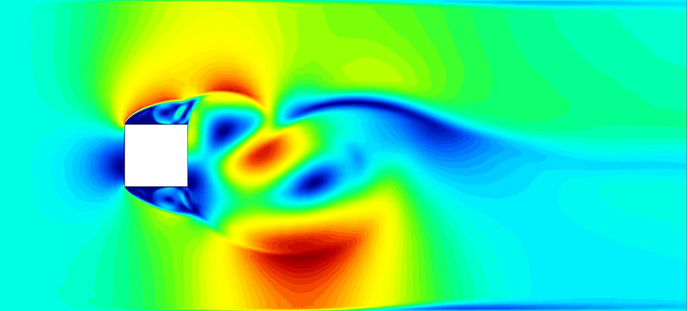
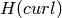
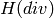
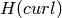
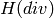
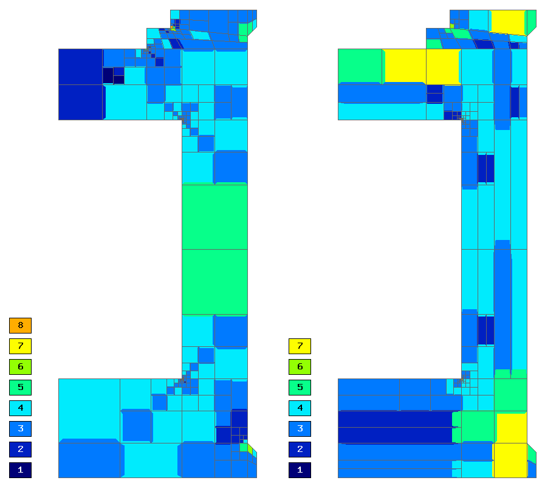
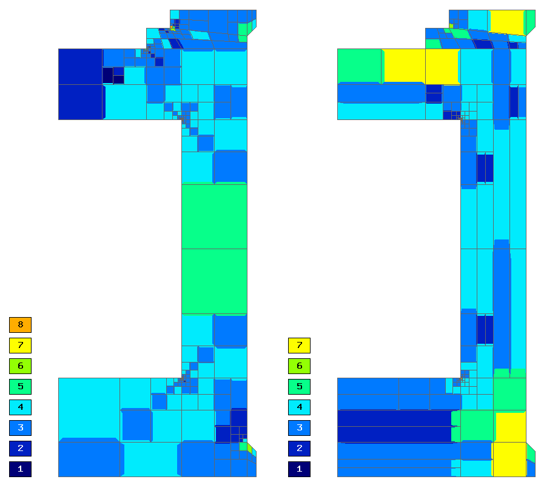
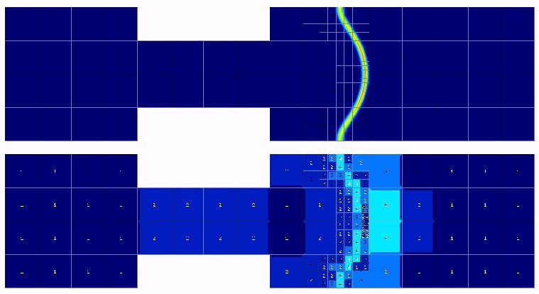

Mathematical Background¶
Main strengths of Hermes are
- adaptive hp-FEM and hp-DG methods,
- adaptivity for time-dependent problems on dynamically-changing hp-meshes, and
- monolithic discretization of multiphysics problems via multimesh hp-FEM/hp-DG.
The following list describes the above in more detail:
- Mature hp-adaptivity algorithms. Hermes puts a major emphasis on error control and automatic adaptivity. Practitioners know well how painful it is to use automatic adaptivity in conjunction with standard lower-order approximations such as linear or quadratic elements - the error decreases somehow during a few initial adaptivity steps, but then it slows down and it does not help to invest more unknowns or CPU time. This is typical for low-order methods. In contrast to this, the exponentially-convergent adaptive hp-FEM and hp-DG do not have this problem - the error drops steadily and fast during adaptivity all the way to the desired accuracy. The following graph shows typical convergence rates of h-FEM with linear elements, h-FEM with quadratic elements, and hp-FEM on a log-log scale:

Same graphs as above but now in terms of CPU time:

- Wide applicability. Hermes is PDE-independent. Standard FEM codes are designed to solve some narrow class(es) of PDE problems (such as elliptic equations, fluid dynamics, electromagnetics etc.). Hermes does not employ any technique or algorithm that would limit its applicability to some particular class(es) of PDE problems. Automatic adaptivity is guided by a universal computational a-posteriori error estimate that works in the same way for any PDE. Of course this does not mean that the algorithms perform equally well on all PDE - some equations simply are more difficult to solve than others. However, Hermes allows you to tackle an arbitrary PDE or multiphysics PDE system and add your own equation-specific extensions if necessary. Visit the hp-FEM group home page and especially the gallery to see numerous examples.

- Arbitrary-level hanging nodes. Hermes has a unique original methodology for handling irregular meshes with arbitrary-level hanging nodes. This means that extremely small elements can be adjacent to very large ones. When an element is refined, its neighbors are never split forcefully as in conventional adaptivity algorithms. It is well known that approximations with one-level hanging nodes are more efficient compared to regular meshes. However, the technique of arbitrary-level hanging nodes brings this to a perfection.

- Multimesh hp-FEM. Various physical fields or solution components in multiphysics problems can be approximated on individual meshes, combining quality
 , , , and
, , , and  conforming higher-order elements. Due to a unique original methodology, no error is caused by operator splitting, transferring data between different meshes, and the like. The following figure illustrates a coupled problem of heat and moisture transfer in massive concrete walls of a nuclear reactor vessel.
conforming higher-order elements. Due to a unique original methodology, no error is caused by operator splitting, transferring data between different meshes, and the like. The following figure illustrates a coupled problem of heat and moisture transfer in massive concrete walls of a nuclear reactor vessel.
 

- Dynamical meshes for time-dependent problems. In time-dependent problems, different physical fields or solution components can be approximated on individual meshes that evolve in time independently of each other. Due to a unique original methodology, no error is caused by transfering solution data between different meshes and time levels. No such transfer takes place in the multimesh hp-FEM - the discretization of the time-dependent PDE system is monolithic.
